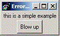
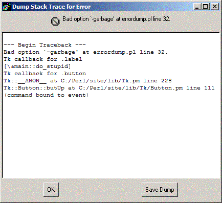

|  |  |
Download it here.
Sorry, no tests yet...
Tk::ErrorDump - An alternative to Tk::Error or Tk::ErrorDialog
use Tk::ErrorDump;
my $errdlg = $mw->ErrorDump(
-icon => $my_icon,
-defaultfile => '*.tkd',
-dumpcode => \&err_dlg_dump # dump any current project context
[ the usual frame options ]
);
icon - an app specific icon for the popup error dialog;
default is std. Tk icon
defaultfile - the default filename (maybe wildcarded) used in the
getSaveFile dialog to create the dump file
dumpcode - a CODE reference called after an error is intercepted
and the ErrorDump dialog is presented. It is passed a filehandle
to which the app can write any app-specific dump information
[ NOTE: This module is derived directly from Tk::ErrorDialog... tho you probably can't tell it anymore ]
An error dialog that traps Tk errors, then displays the error and stack trace in a ROText widget, and gives the user the opportunity to save that information in a file. In addition, the application can provide a callback which is invoked after the dialog is presented, and to which the dumpfile handle (if any) is passed, in order for the application to dump any internal diagnostic information, and/or execute cleanup code.
Tk::ROText
Tk::getSaveFile
None so far...
Dean Arnold, darnold@presicient.com
Original Tk::ErrorDialog by Stephen O. Lidie, Lehigh University Computing Center. lusol@Lehigh.EDU
December 29, 2003 : Converted from Tk::ErrorDialog